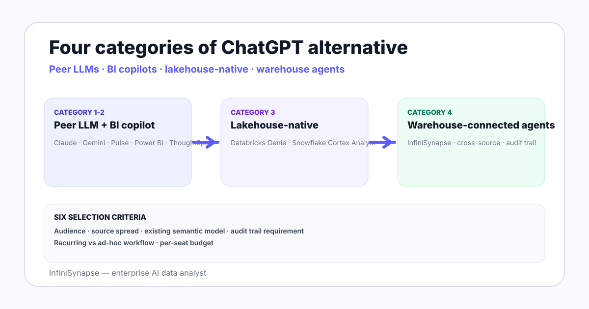

Alternatives to ChatGPT for data analysis in 2026 — warehouse-connected agents, BI copilots, lakehouse tools, and a rubric to pick by audience and source.
AuthorInfiniSynapse Research, product and data architecture team
Published2026-06-28 · Last verified 2026-06-28 · Next review 2026-09-28
Evidence baseVendor documentation for ChatGPT Advanced Data Analysis, Claude, Gemini, Tableau Pulse, Power BI Copilot, ThoughtSpot Spotter, Databricks Genie, Snowflake Cortex Analyst, InfiniSynapse; hands-on testing in 2026.
Disclosure: Published by InfiniSynapse, which sells one of the alternatives. The guide aims to describe each option fairly and ends with a rubric you can use regardless of which option you pick.
TL;DR
Alternatives to ChatGPT for data analysis split into four categories: peer LLMs (Claude, Gemini) with similar single-file workflows, BI copilots (Tableau Pulse, Power BI Copilot, ThoughtSpot Spotter), lakehouse-native (Databricks Genie, Snowflake Cortex Analyst), and warehouse-connected data agents (InfiniSynapse and peers).
Peer LLMs match ChatGPT shape with different model behavior — useful when single-file workflows continue but you want a different mix of capability or price.
BI copilots cover non-technical audiences who already use a BI tool with a semantic model — Tableau, Power BI, ThoughtSpot — and want conversational access.
Lakehouse-native is the right fit when your data lives in Databricks or Snowflake and you want governance to inherit the lakehouse posture.
Warehouse-connected data agents add a deeper planner-executor-verifier loop and a bound knowledge base for cross-source ad-hoc analysis with an audit trail.
Alternatives to ChatGPT for data analysis fall in four buckets: peer LLMs like Claude and Gemini for single-file work, BI copilots for non-technical audiences with semantic models, lakehouse-native tools like Genie and Cortex Analyst when data sits in one platform, and warehouse-connected data agents for cross-source ad-hoc analysis with an audit trail. Pick by audience and source spread.

Four categories of alternative in 2026
Category
Examples
Best fit
Peer LLMs
Claude, Gemini, Llama-based assistants, Julius AI
Single-file analysis with different model behavior
BI copilots
Tableau Pulse, Power BI Copilot, ThoughtSpot Spotter
Non-technical audiences on existing semantic models
Lakehouse-native
Databricks Genie, Snowflake Cortex Analyst
Data lives in one warehouse, governance posture matters
Warehouse-connected data agents
InfiniSynapse and peers
Cross-source ad-hoc analysis with audit trail
Honest picks by category
Peer LLMs
Claude — strong on long-form code reasoning. Gemini — tight integration with Google Sheets and BigQuery. Julius AI — consumer-friendly chart-driven UX (see Julius AI review). All three share ChatGPT's single-file ceiling, so the switch is about model behavior, not architecture.
BI copilots
Tableau Pulse — fits Tableau-resident teams with a semantic model. Power BI Copilot — fits Microsoft-resident teams. ThoughtSpot Spotter — search-driven BI independent of Tableau or Power BI. See best AI data visualization tools for deeper coverage.
Lakehouse-native
Databricks Genie — Databricks-resident teams (see Genie review). Snowflake Cortex Analyst — Snowflake-resident teams. Both inherit the lakehouse governance posture, which is their strongest fit signal.
Three honest patterns where ChatGPT remains the right tool:
Single-file one-off exploration. A vendor sent a CSV. ChatGPT is fast.
Pre-analysis sketching. Test an idea on a sample before writing the production model.
Personal learning. A new analyst learning SQL or pandas on toy data.
Not every analysis is a team workflow on a warehouse. The companion ChatGPT data analysis limits page walks the wall.
When to switch from ChatGPT
Three signals say it is time:
You have re-explained the same business definitions across more than three ChatGPT sessions in a week.
The CSV you upload now lives in a warehouse you could query directly.
An auditor or finance reviewer asked how a number was produced and the chat log will not pass review.
Any one is enough; all three together is overdue.
A 10-minute selection rubric
Who is the primary audience — engineer, analyst, business stakeholder, executive?
Where does the data live — single warehouse, multiple sources, file uploads only?
Does a semantic model already exist in a BI tool?
Is an audit trail required for any answer that leaves your team?
Is the workflow recurring (dashboard) or ad-hoc (agent)?
What is the budget per seat per year?
"File uploads, no semantic model, personal use, no audit" → peer LLM. "BI-resident, semantic model exists, non-technical audience" → BI copilot. "Single-warehouse, governance matters, technical audience" → lakehouse-native. "Cross-source, audit-grade, ad-hoc" → warehouse-connected agent.
The best alternative to ChatGPT depends on the audience and the source — not on the model brand on the bottle.
Compare a warehouse-connected alternative on your data
Connect a Postgres, MySQL, Snowflake, or Supabase warehouse read-only. Seed a small business glossary. Ask one question that does not fit a CSV upload — the cross-source kind ChatGPT cannot reach — and read the plan, SQL, and verification step before deciding.
What are the main alternatives to ChatGPT for data analysis?
Four categories: peer large language models like Claude, Gemini, and Julius AI that share ChatGPT single-file shape with different model behavior; BI copilots like Tableau Pulse, Power BI Copilot, and ThoughtSpot Spotter for non-technical audiences on existing semantic models; lakehouse-native tools like Databricks Genie and Snowflake Cortex Analyst when data lives in one platform; and warehouse-connected data agents like InfiniSynapse for cross-source ad-hoc analysis with an audit trail.
Is Claude or Gemini better than ChatGPT for data analysis?
They share architecture with ChatGPT — sandboxed Python over a single uploaded file — but have different model behavior. Claude tends to handle long-form code reasoning more carefully; Gemini integrates more tightly with Google Sheets and BigQuery. None of the three breaks past the single-file ceiling on its own. The switch is about model preference, not capability category.
Which alternative fits a team that uses Tableau or Power BI?
BI copilots inherit the semantic model and governance posture you already have. Tableau Pulse fits Tableau-resident teams; Power BI Copilot fits Microsoft-resident teams; ThoughtSpot Spotter is a search-driven third lane independent of either vendor. The strength is that non-technical stakeholders get conversational access to already-governed dashboards without leaving the BI surface.
When should I pick a lakehouse-native tool like Databricks Genie or Snowflake Cortex Analyst?
Pick lakehouse-native when your data already lives in one platform — Databricks or Snowflake — and you want the AI surface to inherit the lakehouse governance posture, the existing user provisioning, and the compute footprint. The tradeoff is that questions across two clouds or across the lakehouse plus a transactional database need a federation layer or a different tool that connects to both directly.
What makes a warehouse-connected data agent different from ChatGPT?
Four real differences: a direct read-only connection to your warehouse instead of file uploads, a planner-executor-verifier loop that runs an independent verification query on each result, a bound knowledge base of business definitions retrieved before drafting SQL so the agent stays aligned with your operational vocabulary, and an evidence trail per answer that satisfies audit-grade postures aligned with NIST AI RMF and similar frameworks.
Where does ChatGPT still win against the alternatives?
Three real patterns: single-file one-off exploration when a vendor sends a CSV and you want a quick chart and summary; pre-analysis sketching where you test an idea on a sample before writing the production model; and personal learning where a new analyst is learning SQL or pandas on toy data. For team analysis on a live warehouse with shared business definitions, the alternatives close the gap.
How do I evaluate alternatives to ChatGPT for my team?
Six criteria in a 10-minute rubric: primary audience (engineer, analyst, business stakeholder, executive), where the data lives (single warehouse, multiple sources, file uploads), whether a semantic model already exists in a BI tool, whether an audit trail is required, whether the workflow is recurring or ad-hoc, and the per-seat budget. Score each candidate; read the per-criterion gaps rather than the total score.
Methodology and review notes
Last updated: 2026-06-28 · Next scheduled review: 2026-09-28
This buyer guide synthesizes vendor documentation for ChatGPT Advanced Data Analysis, Claude, Gemini, Julius AI, Tableau Pulse, Power BI Copilot, ThoughtSpot Spotter, Databricks Genie, Snowflake Cortex Analyst, and InfiniSynapse; hands-on testing of each category in 2026; field experience with teams that picked one or more alternatives; and public benchmark studies. Reads aim for fair tradeoff descriptions rather than promotional language.
Conflict of interest: InfiniSynapse publishes this guide and sells an enterprise AI data analyst. To reduce bias, the page leads with the topic itself, treats InfiniSynapse as one option among many, and links to external sources for every numeric claim.
Update cadence: Reviewed every 90 days for accuracy and link health.
Sources and references
[Vendor] OpenAI. ChatGPT Advanced Data Analysis help center. help.openai.com.